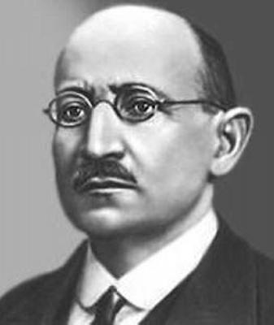

Ալեքսանդր Սպենդիարյան
(1871-1928)
 Սպենդիարյանը հայ դասական երաժշտության հիմնադիրներից է: Յուրացնելով ժողովրդական երաժշտության օրինաչափությունները, դաստիարակվելով եվրոպական և, մասնավորապես, ռուսական դասական երաժշտության ավանդույթներով՝ Սպենդիարյանն ընդարձակեց ազգային երաժշտության ժանրային շրջանակները, դրեց հայ դասական սիմֆոնիկ երաժշտության հիմքը, հարստացրեց կամերային երաժշտությունը և ստեղծեց դասական «Ալմաստ» օպերան: Սերտորեն կապված լինելով իր ժամանակաշրջանի հետ Սպենդիարյանը միշտ ձգտել է կյանքը պատկերել բազմակողմանիորեն: Լայն մտահորիզոնի տեր կոմպոզիտորը հարստացրեց հայ երաժշտությունը նոր գաղափարներով, թեմաներով և կերպարներով, նոր արտահայտչամիջոցներով: Քնարականին ու կենցաղայինին զուգահեռ, որոնք, ի դեպ, նրա ստեղծագործություններում ներկայացված են բազմազան ձևերով, կոմպոզիտորն արծարծեց նաև քաղաքացիական թեմաներ: Սպենդիարյանի երաժշտության մեջ քնարական էջերի կողքին, հանդիպում ենք առնականության, հերոսականության, բուռն ցասում ու բողոք արտահայտող էջերի:
Սպենդիարյանը թափանցեց մարդու հոգեկան աշխարհի խորքերը, նրբին երանգներով արտահայտեց նրա հույզերը, ստեղծեց ժողովրդի կյանքի ու կենցաղի վառ տեսարաններ, բնության գունեղ պատկերներ: Կոմպոզիտորի երաժշտական ինքնատիպ ոճը դրսևորվեց արևելյան՝ առաջին հերթին իր ժողովրդի կյանքի հետ կապված թեմաներով ստեղծագործություններում: Այդ մասին նա գրում է. «Հետադարձ հայացք նետելով այն ամենի վրա, ինչ ես գրել եմ մինչև օրս, կարելի է այն եզրակացությանը գալ, որ... իմ ստեղծագործություններից առավել անհատական են արևելյան ոճի ստեղծագործությունները» :
Ալեքսանդր Աթանեսի Սպենդիարյանը ծնվել է 1871 թվականի նոյեմբերի 1-ին (հոկտեմբերի 20), Կախովկայում (այժմ Ուկրաինայի Խերսոնի շրջան), վաճառականի ընտանիքում:
Ապագա կոմպոզիտորի մանկական երաժշտական տպավորությունները կապված էին ընտանիքում տիրող մթնոլորտի և Ղրիմի երաժշտական կենցաղի հետ: Միջնակարգ կրթությունն ստացել է Սիմֆերոպո-լի գիմնազիայում: Երաժշտական պարապմունքներն սկսել է ինը տարեկանից, սովորել է ջութակ նվագել:
Բարձրագույն կրթությունն ստացել է Մոսկվայում՝ ավարտել է համալսարանի իրավաբանական բաժինը (1895): Մոսկվայում Սպենդիարյանը շարունակում է ջութակի դասեր վերցնել Մեծ թատրոնի նվագախմբի արտիստ Պեկարսկուց: Նրա երաժշտական զարգացման համար չափազանց մեծ նշանակություն ունեցավ մասնակցությունը ուսանողական սիմֆոնիկ նվագախմբին (առաջին ջութակների կոնցերտմայստեր), որի ղեկավարն էր կոմպոզիտոր Ն. Կլենովսկին, որից և վերցրեց ստեղծագործական իր առաջին դասերը:
1896-1900 թվականներին Սպենդիարյանը աշակերտեց նշանավոր կոմպոզիտոր Ն. Ռիմսկի-Կորսակովին (Պետերբուրգ): Մեծ կոմպոզիտորի ձեռքի տակ Սպենդիարյանը դարձավ մասնագիտական բարձունքներին հասած արվեստագետ: Նրա աշխարհայացքի ձևավորմանը մեծապես նպաստեց նաև շփումը ռուսական արվեստի ականավոր ներկայացուցիչների` կոմպոզիտորներ Գլազունովի, Լյադովի, Արենսկու, ինչպես և հայ մշակույթի առաջադեմ գործիչներ Ն. Տիգրանյանի, Հ. Նալբանդյանի և այլոց հետ:
Սպենդիարյանի ստեղծագործական առաջին շրջանը (ուսման տարիները) եզրափակվեց «Համերգային նախերգանքով» (1900), որն առաջին անգամ կատարվեց 1901 թ. հունիսի 5-ին Պավլովսկում, դիրիժոր Ն. Գալկինի ղեկավարությամբ և մեծ հաջողություն ունեցավ:
Սպենդիարյանի ստեղծագործական միջին շրջանը (1900-1917) նրա ստեղծագործական հասունացման, ոճի հաստատման, բարոյական կերպարի ձևավորվելն ավարտվելու տարիներն են:
Կոմպոզիտորը ապրում է Ղրիմում (Յալթա, Սուդակ, Թեոդոսիա), ուր ծավալում է երաժշտական-հասարակական բուռն գործունեություն: Յալթայի նրա տունը դառնում է մշակութային կենտրոն, ուր հաճախ լինում են Մ. Գորկին, Ա. Չեխովը, Ա. Գլազունովը, Ա. Արենսկին, Ֆ. Շալյապինը: Այստեղ կազմակերպվում էին երաժշտական երեկոներ, որոնց ժամանակ ելույթ էին ունենում թե´ մասնագետ, և´ թե ժողովրդական կատարողներ: Յալթայում սկսվեց կոմպոզիտորի դիրիժորական գործունեությունը: Նա հաճախ համերգներով հանդես էր գալիս Յալթայում, Խարկովում, Օդեսայում, Դոնի Ռոստովում, Նոր Նախիջևանում և այլուր, կատարում ոչ միայն իր, այլև ռոա ու եվրոպացի կոմպոզիտորների ստեղծագործությունները: Այս, ինչպես և Մոսկվայում և Լենինգրադում կայացած հեղինակային համերգները արժանանում էին ունկնդիրների ջերմ վերաբերմունքին:
Սպենդիարյանը հաճախ է լինում Պետերբուրգում, որտեղ արժանանում էր ընկերների (Գլազունով, Արենսկի, Լյադով) և ուսուցչի սիրալիր ու ջերմ ընդունելությանը: Ա. Օսսովսկին գրում է. «Ալեքսանդր Աֆանասևիչի բարձր շնորհքն ու հմայքը նրա համար բացեցին Ռիմսկի-Կորսակովների տան դռները, ուր այցելողների թիվը սահմանափակված էր խիստ ընտրությամբ: Սպենդիարյանն այստեղ դարձավ մշտապես հաճելի հյուր: Այստեղ, երաժշտական երեկոներին, կատարվում էին նաև նրա ստեղծագործությունները»: Հայտնի է, որ 1905 թվականի մարտի 21-ին Ն. Ռիմսկի-Կորսակովին հեռացրեցին Պետերբուրգի կոնսերվատորիայից՝ ուսանողների ընդվզումներին անձամբ մասնակցելու համար: Այդ փաստը փոթորկալի վրդովմունք առաջացրեց: Ի նշան բողոքի՝ կոնսերվատորիայից հեռացան Գլազունովը, Լյադովը, Բլյումենֆելդը, Եսիպովան: Բողոքի բազմաթիվ նամակներ ուղարկվեցին ինչպես իրեն՝ կոմպոզիտորին, այնպես էլ տարբեր թերթերի ու ամսագրերի խմբագրություններ: Սպենդիարյանի բողոքի բաց նամակը տպագրվել է "Русь" թերթում (1905 թ. ապրիլի 4-ին): Ահա այդ նամակը.«Թանկագին Նիկոլայ Անդրեևիչ,
Ձեր մեջ բարձր գնահատելով ազնվագույն և ուղղամիտ մարդուն և ակնածանքով խոնարհվելով ռուսական արվեստում Ձեր ունեցած հսկայական նշանակության առջև՝ իմ անկեղծ համակրանքն եմ հայտնում Ձեր արդար և ազնիվ բողոքին, որ Դուք արտահայտել եք ՍՊԲ կոնսերվատորիայի տնօրենին Ձեր գրած համակում: Ես չեմ կարող իմ մեջ խեղդել խորին զայրույթի զգացումս Ձեզ կոնսերվատորիայից վտարելու առթիվ, որ տեղի է ունեցել Ձեր բողոքի հետևանքով՝ մի փաստ անհավատալի և չտեսնված, ամոթալի՝ վտարողների համար»:
Սպենդիարյանի ստեղծագործական կյանքում կարևոր եղան երկու իրադարձություն. 1916 թվականին «Հայոց երաժշտական ընկերության» հրավերով հեղինակային համերգով նա այցելեց Թիֆլիս, իսկ 1924-ին՝ Հայաստանի կառավարության հրավերով փոխադրվեց Երևան:
Թիֆլիսում Սպենդիարյանը մտերմական կապեր հաստատեց հայ արվեստագետների հետ, լսեց բազմաթիվ ժողովրդական ու աշուղական երգեր, այստեղ գտավ իր որոնած նյութը օպերայի համար՝ ոգեշնչման աղբյուրը Հ. Թումանյանի «Թմկաբերդի առումը» պոեմն էր: Թումանյանի և կոմպոզիտորի միջև կարճ ժամանակամիջոցում ստեղծվեցին ջերմ հարաբերություններ: Բանաստեղծը հանձն առավ գրել լիբրետոն, իսկ կոմպոզիտորը ձեռք բերեց ժողովրդական երգերի ժողովածուներ, ձայնապնակներ, լսեց ու գրի առավ գեղջկական ու աշուղական երգեր, մուղամներ՝ անհրաժեշտ նյութեր ապագա օպերայի համար: Քաղաքացիական պատերազմի տարիներին հնարավորություն չունենալով կապ պահպանել Թումանյանի հետ՝ Սպենդիարյանը ստիպված էր օպերայի լիբրետոյի հարցով դիմել բանաստեղծուհի Սոֆյա Պարնոկին, որն այդ ժամանակ ապրում էր Ղրիմում: Այս տարիներից սկսվում է կոմպոզիտորի ստեղծագործական վերջին շրջանը՝ մտահղացումների խորունկության, վարպետության կատարելության, սիմֆոնիկ մտածելակերպին լիակատար տիրապեւոելու, երաժշտության ազգային ինքնատիպության հաստատման շրջանը:
Սպենդիարյանի կյանքն ու գործունեությունը նոր իմաստ ստացան Հայաստանում: Այստեղ նա մեծ հնարավորություն ստացավ ավելի խոր և բազմակողմանի ուսումնասիրելու ժողովրդի կյանքը, նրա հանճարով կերտված հիանայի կոթողները, ավելի լավ ճանաչելու նրա բնավորությունը, հոգեբանությունը: Այստեղ մոտիկից շփվեց Կոմիտասի ստեղծագործության հետ, որը հսկայական տպավորություն թողեց նրա վրա.«... ես հայտնաբերեցի հայ մեծ կոմպոզիտոր Կոմիտասին, որն այսուհետ կլինի իմ ուսուցիչների թվում», - ասել է նա:
Սպենդիարյանը հսկայական դեր խաղաց հանրապետության երաժշտական կյանքի զարգացման գործում թե իր ստեղծագործությամբ ու կատարողական արվեստով, թե հասարակական գործունեությամբ: Նա մեծապես նպաստեց սիմֆոնիկ նվագախմբի ստեղծմանը, մամուլում արժեքավոր հոդվածներով հանդես եկավ երաժշտական կյանքի կարևոր հարցերի շուրջ: Որպես Հայպետհրատի վարչության երաժշտական-խմբագրական հանձնաժողովի նախագահ՝ նա իրականացնում է հայ կոմպոզիտորների երկերի հրատարակությունը, նախապատրաստական աշխատանք տանում նրանց մասին բրոշյուրներ հրատարակելու ուղղությամբ:
1924-ի դեկտեմբերի 10-ին Երևանում կայացավ աոաջին սիմֆոնիկ համերգը Սպենդիարյանի ղեկավարությամբ: Ծրագրում կոմպոզիտորի գործերն էին: Ռ. Մելիքյանը գրում է. «Սպենդիարյանի գալուստով Երևանի երաժշտական կյանքի նոր ժամանակաշրջանը նշանավորվեց և սիմֆոնիկ համերգների կազմակերպումով, խթանվեց տեղի ուժերի երաժշտական ստեղծագործության նոր վերելքը»:
Սպենդիարյանը օժտված էր մարդկային նուրբ զգացմունքներով, բարձր բարոյականությամբ: Լինելով վերին աստիճանի բարեսիրտ և կարեկից մարդ՝ նա արձագանքում էր խնդրատուների բազմաթիվ ու բազմապիսի դիմումներին՝ ցույց տալով նրանց թե´ բարոյական, թե՛ նյութական օգնություն:
1928 թվականին Գլազունովի՛ Լունաչարսկու, Օսսովսկու հետ միասին Սպենդիարյանը Խորհրդային Միության կառավարության կողմից նշանակված էր Շուբերտի մահվան 100-ամյակը նշելու համար ստեղծված համաշխարհային կոմիտեի կազմի մեջ: Բայց կոմպոզիտորին չվիճակվեց մասնակցել կոմիտեի աշխատանքներին՝ 1928 թ. մայիսի 7-ին ուժերի ծաղկման շրջանում կտրվեց նրա կյանքի թելը:
Վոկալ-կամերային և սիմֆոնիկ երաժշտության բնագավառներում առավելագույնս դրսևորվեցին կոմպոզիտորի անկրկնելի ոճը, ստեղծագործական ու գեղագիտական ուրույն սկզբունքները: